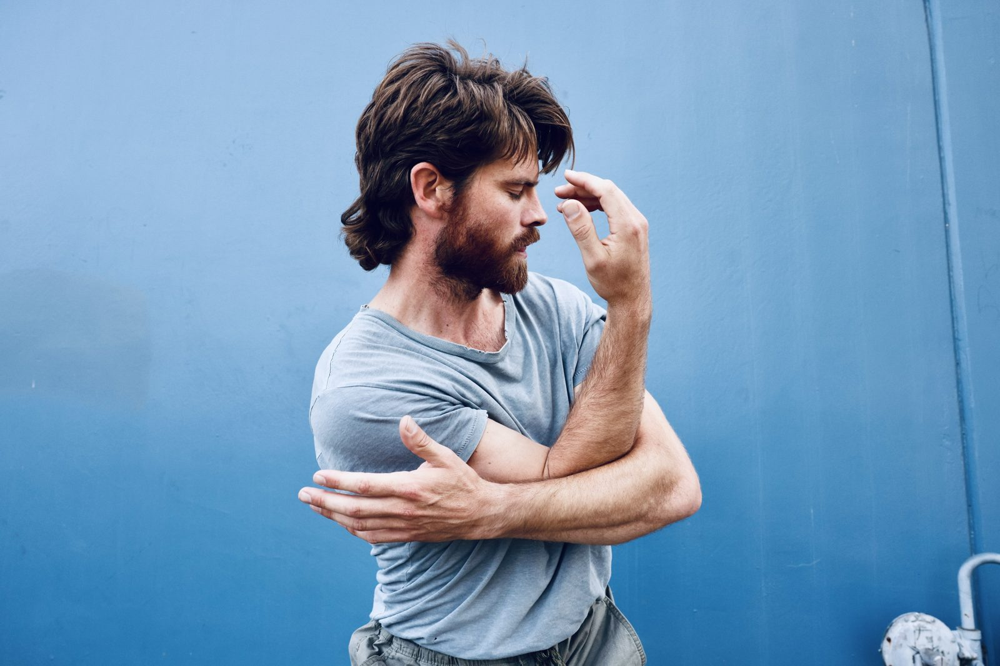

Felt Sense Movement
Felt Sense Movement is a project of Marcus van Duren that brings people together to research, play, and revel in the wonder of human movement.

Marcus van Duren
Marcus is a dancer, teacher and musician based in the San Francisco Bay Area. He has intensively studied movement and dance since discovering contact improvisation in 2012, and has been teaching CI locally and internationally for more than 10 years. Marcus is an active member of the Axis Syllabus community and is currently an Axis Syllabus Teacher Candidate.
For Marcus, teaching is not just about transmitting information. It's also about creating a safe space for participants to explore, take risks and collaborate. When it comes to teaching contact improvisation, Marcus specializes in merging the technical information of biomechanics with play, humor and ritual to create engaging learning experiences that aim to serve the whole person, not just the dancer.
Syllabus Telegram
Group Join Here